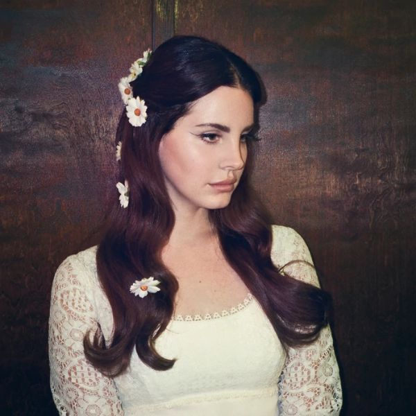
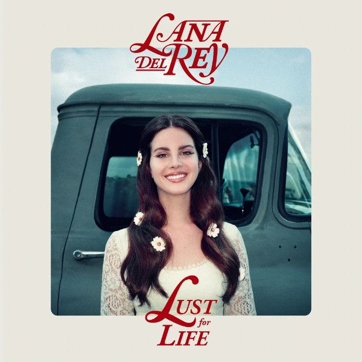

Lust for Life
Released July 2017
Featured artists:
- Sean Ono Lennon
- Stevie Nicks
- ASAP Rocky
- The Weeknd
- Playboi Carti
Lust for Life is the fifth studio album by American singer-songwriter Lana del Rey. It was released worldwide on July 21, 2017, by Polydor, Interscope Records and Urban Records. The album features trap rhythms and beats, classic rock references, orchestral backings, and Lana Del Rey singing with a hip-hop affectation.


Tracklist
- Love
- Lust for Life
- 13 Beaches
- Cherry
- White Mustang
- Summer Bummer
- Groupie Love
- In My Feelings
- Coachella - Woodstock in My Mind
Tracklist
- God Bless America - And All The Beautiful Women In It
- When The World Was At War We Kept Dancing
- Beautiful People Beautiful Problems
- Tomorrow Never Came
- Heroin
- Change
- Get Free
- The album was nominated for "Best Pop Vocal Album" at the 60th Annual Grammy Awards.
- The music blog Stereogum described Lust for Life as "Lana Del Rey’s version of an A-list pop album, with a big budget and big-name contributors."
- Rick Nowels, producer
- The album achieved commercial success, debuting at number one on the US Billboard 200 chart.